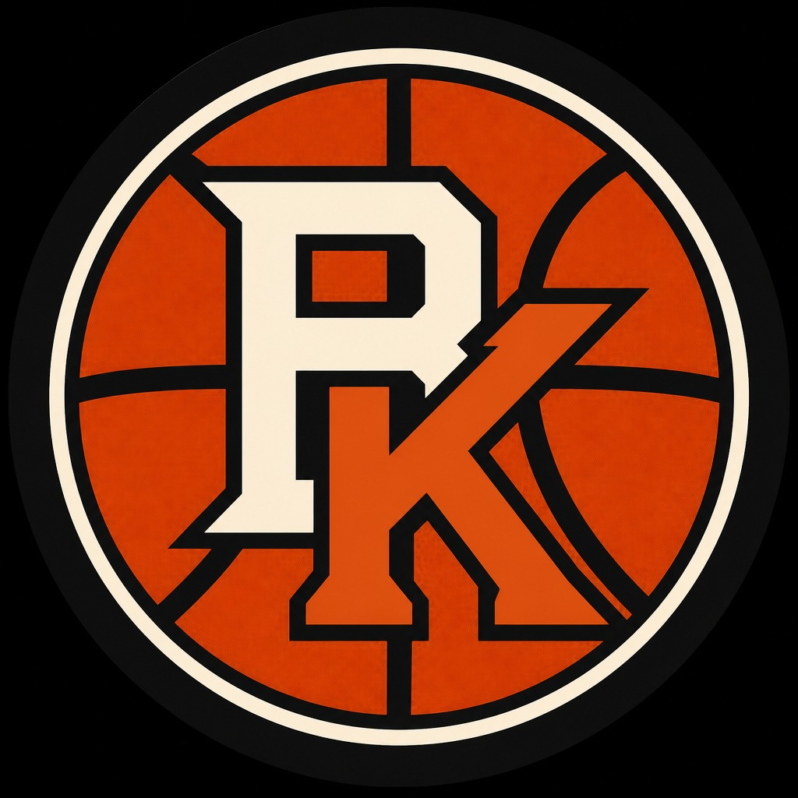

BASKETBALLKEEP
Dynasty · Redraft · Hardwood
BK News · Injury
Aggregate
Trae Young Injury Update: Is Young Playing Tonight vs. Is Keyonte George playing tonight? Grizzlies injury report Yahoo Sports Aggregated from PrizePicks, Yahoo Sports, Sports Illustrated, FanSided, X.
Players on this story
PG ATL
SG LAL
C HOU
SF TOR
SF POR
PG NYK
PG SAS
SF UTA
SF CHA
SG UTA
PG MEM
PF ATL
Tape
Is Keyonte George playing tonight? Jazz vs. Grizzlies injury report Yahoo Sports
Is Keyonte George playing tonight? Jazz vs. Magic injury report Yahoo Sports
Is Keyonte George Playing Tonight? (Injury Update, Betting Impact for Jazz vs. Rockets) Sports Illustrated
Keyonte George Injury Update: Is George Playing Tonight vs. Rockets? PrizePicks
Keyonte George Injury Update: Is George Playing Tonight vs. Knicks? PrizePicks